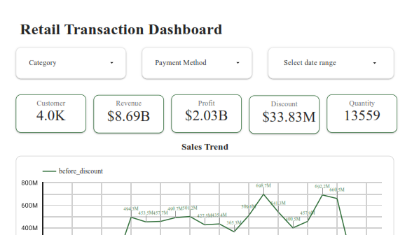
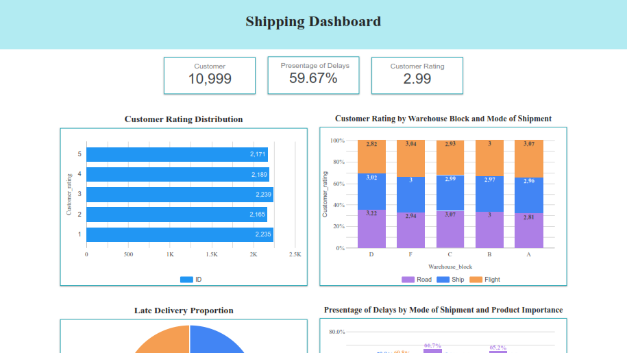
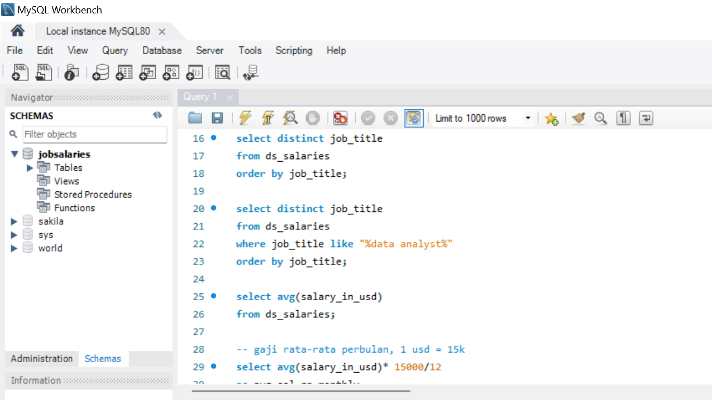

I am a graduate of Industrial Engineering with an interest in data analysis. I possess expertise in data
analysis, SQL, Python, and data visualization using Power BI and Looker Studio. I have experience in
processing, cleaning, and analyzing data through academic projects and internship projects at PT Pertamina (Persero).
Additionally, I have skills in data-based storytelling to support business decision making.
My Resume : andreinavarellaabriel
Recent Work

Analyze sales performance using a dashboard with the following requirements:
1.Display overall transaction performance
2.Sales trends
3.The performance of each payment method
4.The best-selling products
5.Spending for discounts
6.Summary of transactions for each product and consumer

Analyze shipping using a dashboard with the following requirements:
1.Customer rating distribution
2.Comparing the influence between warehouse and mode of shipment on customer rating
3.Product delay percentage based on the mode of shipment and product importance
4.Summary of customer ratings for each influencing factor

Code is used for
1. Searching for NULL values in data
2. View the list of job titles and list of job titles related to data analyst
3. Average analyst salary based in experience level
4. Countries with attractive salaries for data analyst position, full time, entery
level, and medium work experience
5. Calculating the highest salary increase from mid to expert related to full time data analyst
{kind=link}
{kind=link}
{kind=link}